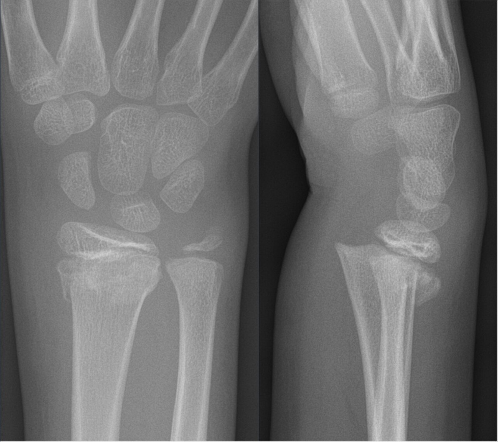

Ficha del catálogo
Lesiones fisarias y clasificación de Salter-Harris
- Sistema
- Óseo
- Modalidad
- RX
- Región
- Esqueleto en crecimiento
- Dificultad
- Intermedio
El cartílago de crecimiento es la zona más débil del hueso inmaduro, por lo que muchas fuerzas que en el adulto romperían un ligamento en el niño fracturan la fisis. Su importancia radica en el riesgo de cierre fisario prematuro con acortamiento o deformidad angular. El seguimiento hasta la madurez esquelética forma parte del manejo.
Técnica
Radiografía en dos proyecciones ortogonales, con proyecciones comparativas del lado sano cuando la duda persiste en niños pequeños.
Qué observar
- Ensanchamiento asimétrico del cartílago de crecimiento
- Trazo que atraviesa la metáfisis dejando un fragmento triangular
- Trazo epifisario que alcanza la superficie articular
- Desplazamiento del núcleo de osificación respecto a la metáfisis
- Compresión fisaria sin trazo visible, sospechada por edema y dolor
- Barras óseas transfisarias en controles diferidos, causa de deformidad
Hallazgos
Alteración de la fisis con ensanchamiento o desplazamiento epifisario, acompañada o no de fragmentos metafisarios o epifisarios.
Perlas
Cuanto mayor es el grado en la clasificación, mayor el riesgo de alteración del crecimiento. Las lesiones que cruzan la fisis hasta la articulación requieren reducción anatómica porque afectan a la vez al crecimiento y a la superficie articular.
Diagnóstico diferencial
- Fisis normal
- Contorno regular y simétrico respecto al lado contralateral.
- Esguince ligamentario
- Sin ensanchamiento fisario ni desplazamiento epifisario.
- Osteomielitis metafisaria
- Contexto febril con lisis y edema medular difuso.
Simuladores
- Núcleos de osificación accesorios
- Irregularidad fisaria fisiológica
- Superposición de estructuras en proyección oblicua
Por modalidad
- RX
- Estudio inicial y de seguimiento
- TC
- Define fragmentos articulares y planificación quirúrgica
- RM
- Detecta lesiones no desplazadas y barras fisarias
Protocolo
Dos proyecciones ortogonales dedicadas. Resonancia si hay sospecha de lesión oculta o para valorar puentes fisarios en el seguimiento.
Clasificación
La clasificación de Salter-Harris ordena las lesiones según el trazo pase por la fisis sola, se extienda a la metáfisis, a la epífisis, a ambas o corresponda a una compresión fisaria. El riesgo de trastorno del crecimiento aumenta con el grado.
Errores frecuentes
- Confundir la fisis normal con un trazo de fractura
- No solicitar seguimiento hasta la madurez esquelética
- Pasar por alto lesiones por compresión que no muestran trazo inicial

salter harris fisis cartilago de crecimiento pediatria fractura deformidad epifisis